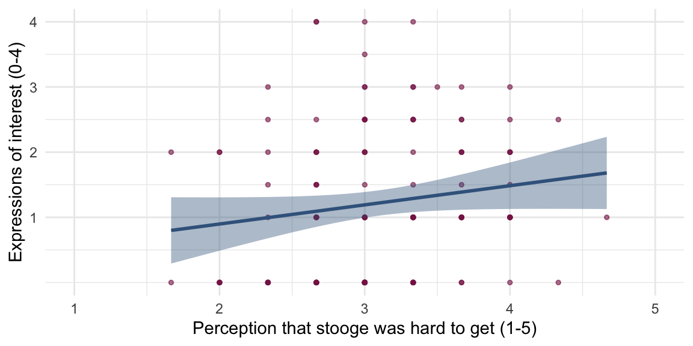
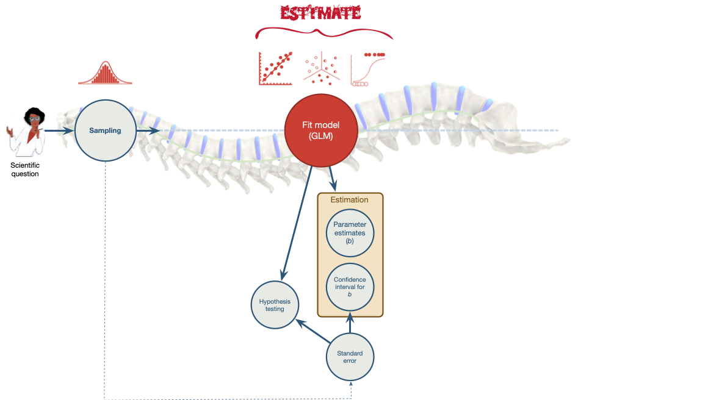
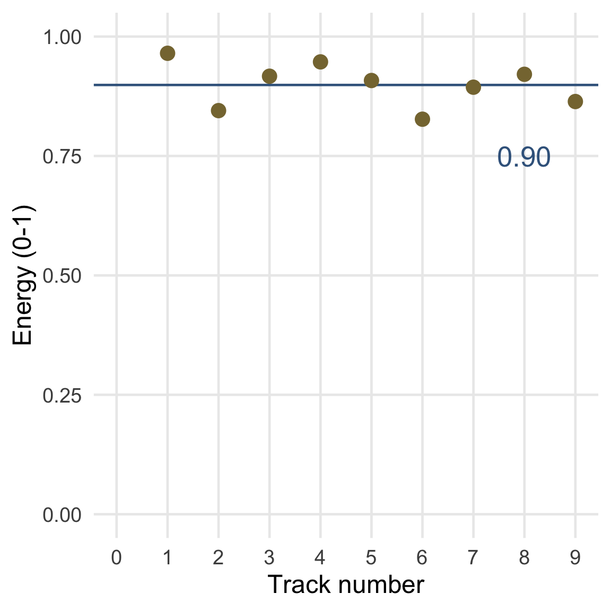
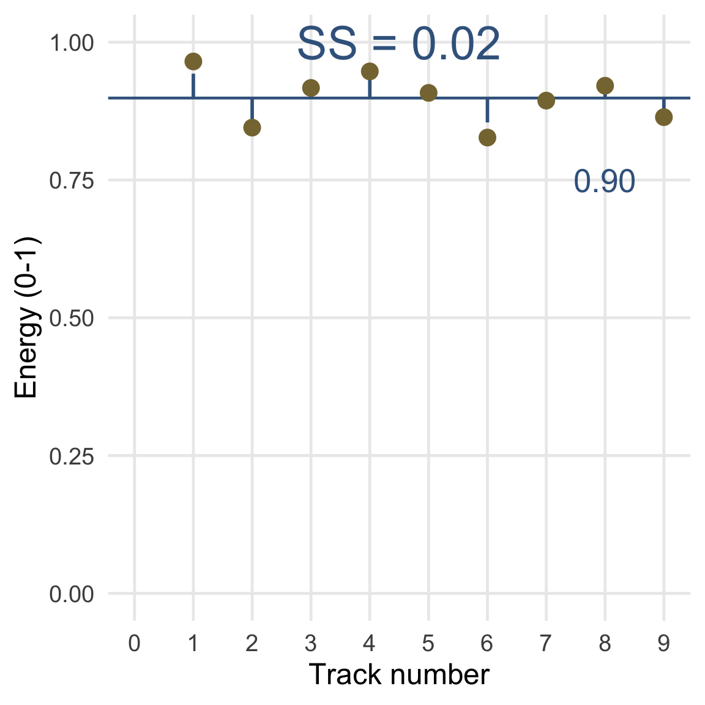

Extending and Evaluating the model
Adding predictors, model fit and hidden messages
University of Sussex


|



Birnbaum revisited

- Does playing hard to get work?1
- Heterosexual participants conversed with an opposite-sex confederate over Instant Messenger for 8 mins
- Interest: Final message coded for the number of expressions of romantic interest (range 0 to 4)
- Hard to get: 3 items rated 1 (not at all) and 5 (very much so)
- The other participant is hard to get
- Mate value: 4 items rated 1 (not at all) and 5 (very much so)
- I perceive the other participant as a valued mate
Extending the linear model
\[ \text{interest}_i = \hat{b}_0 + \hat{b}_1\text{hard to get}_i + \hat{b}_2\text{mate value}_i +e_i \]

Is the average energy score a good fit?

Is the average energy score a good fit?

Is the average energy score a good fit?


Is the average energy score a good fit?


Total sum of squared error, SST

Total sum of squared errors, SST
- Each SS has associated degrees of freedom (df)
- The df is the amount of independent information available to compute SS
- To begin with we have N pieces of independent information
- For every parameter (p) estimated we lose 1 piece of independent information
- To get SST we estimate 1 parameter (the overall mean):
\[ \begin{aligned} \text{df}_\text{T} &= N-p \\ &= 10 - 1 \\ &= 9 \end{aligned} \]

Residual sum of squared errors, SSR
| Reps | Truth | Predicted value | Error | Squared error | |
|---|---|---|---|---|---|
| 1 | 0 | 1.82 | -1.82 | 3.31 | |
| 2 | 2 | 2.37 | -0.37 | 0.14 | |
| 2 | 4 | 2.37 | 1.63 | 2.66 | |
| 3 | 3 | 2.91 | 0.09 | 0.01 | |
| 3 | 3 | 2.91 | 0.09 | 0.01 | |
| 4 | 3 | 3.45 | -0.45 | 0.20 | |
| 4 | 5 | 3.45 | 1.55 | 2.40 | |
| 5 | 4 | 4.00 | 0.00 | 0.00 | |
| 7 | 5 | 5.08 | -0.08 | 0.01 | |
| 8 | 5 | 5.63 | -0.63 | 0.40 | |
| SS Residual | — | — | — | — | 9.14 |

Model sum of squared errors, SSM
- The model is a rotation of the null model (the grand mean)
- Therefore, the null model and the estimated model are distinguished by 1 piece of independent information: the slope, b1
- (Note, the intercept, b0, co-depends on the slope - it is not an independent piece of information)
\[ \begin{aligned} \text{df}_\text{M} &= \text{df}_\text{T} - \text{df}_\text{R} \\ &= 9 - 8 \\ &= 1 \end{aligned} \]